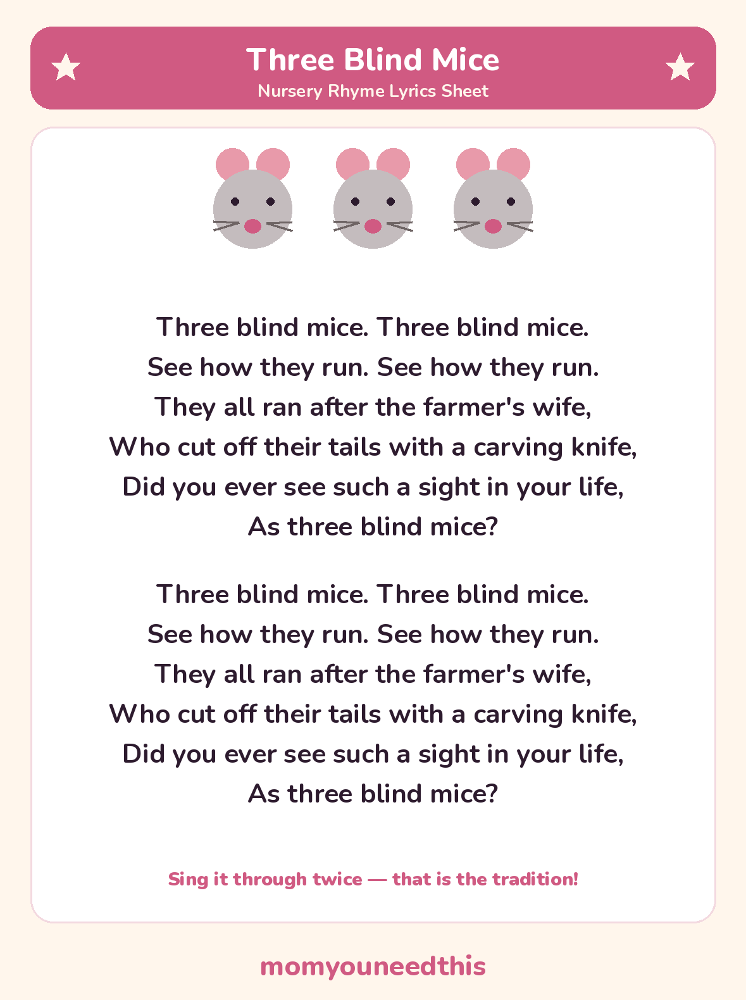

Three Blind Mice The classic story rhyme, with lyrics and a free printable
Three Blind Mice is one of the oldest nursery rhymes still sung today — a tiny story about three mice, a farmer's wife and a very dramatic chase. The full lyrics are below, exactly as generations have sung them, with a free printable lyrics sheet. No signup, just print and sing.
Last updated: October 25, 2026
Quick Answer
Three Blind Mice is a traditional nursery rhyme that tells its whole story in six lines: the mice run after the farmer's wife, who cuts off their tails with a carving knife. The full lyrics are on this page and on a free printable lyrics sheet. The verse is short, so it is traditionally sung through twice.
At a Glance
- Rhyme: Three Blind Mice
- Type: Story rhyme (also sung as a round)
- Best for: Ages 3–6
- Printable: 1 lyrics sheet
- Tradition: In print since 1609
- Cost: Free — print at home
🎵 Three Blind Mice Lyrics
The whole rhyme is one six-line verse — so short that families traditionally sing it straight through twice, which is how it is printed here and on the sheet. Every line doubles back on itself, which is exactly why young children can join in so quickly.
Three blind mice. Three blind mice.
See how they run. See how they run.
They all ran after the farmer's wife,
Who cut off their tails with a carving knife,
Did you ever see such a sight in your life,
As three blind mice?
Three blind mice. Three blind mice.
See how they run. See how they run.
They all ran after the farmer's wife,
Who cut off their tails with a carving knife,
Did you ever see such a sight in your life,
As three blind mice?

✂️ Download Your Free Three Blind Mice Lyrics Sheet
The full lyrics on one sheet — big, clear lines for young readers.
⬇️ Download Free Lyrics Sheet 🖨️ Print🎁 Free printable for ages 3–6
🐭 About This Rhyme
Three Blind Mice is a counting rhyme and a story in one: three mice, named in the very first line, and a chase that ends with the rhyme's big dramatic moment. The repeated lines — “See how they run. See how they run.” — give children a part they can shout along with on the very first hearing.
It is also a musical round: two groups can sing it at the same time, starting a few lines apart, and the words chase each other just like the mice. The rhyme was first printed in 1609 in a songbook edited by Thomas Ravenscroft, with quite different words; the farmer's wife version families sing today came later and simply stuck.
🖨️ How to Use This Rhyme
- Sing it slowly first. One line at a time, and let your child echo the doubled lines — “See how they run” is the easy way in.
- Count the mice. Hold up three fingers at “three blind mice” and count them together: one, two, three.
- Print the lyrics sheet. The same words as this page, in big clear lines — prop it up where you sing.
- Let your child “read” it back. Singing the verse through a second time from the sheet is early reading practice, even before the words are decoded.
🎵 More Nursery Rhymes & Fun
🎵 Nursery Rhymes
The full hub of classic nursery rhymes — lyrics and a free printable sheet for every rhyme. Browse all nursery rhymes.
🐑 Baa Baa Black Sheep
The question-and-answer rhyme — yes sir, yes sir, three bags full — with both verses. Sing Baa Baa Black Sheep.
🌙 Hey Diddle Diddle
The classic nonsense rhyme — the cat, the fiddle and the cow over the moon. Read Hey Diddle Diddle.
🎨 Free Coloring Pages
Hundreds of free coloring sheets to print for every age. See the coloring pages.
❓ Three Blind Mice FAQ
What are the lyrics to Three Blind Mice?
The full words are in the lyrics section near the top of this page — the complete verse, printed twice the way it is traditionally sung. The free printable sheet carries the same words.
What age is Three Blind Mice for?
It suits ages 3 to 6. The doubled lines make it easy for a 3-year-old to join in, and older children enjoy the story, the counting and singing it faster — or as a round.
Can I print the lyrics sheet?
Yes — the lyrics sheet is free to print at home, with no signup. Print it as many times as you like for your own family or classroom.
Can you sing Three Blind Mice as a round?
Yes — it is one of the oldest rounds in English. One group starts, and the second group starts from the beginning a line or two later. The words end up chasing each other, which children find hilarious once it clicks.